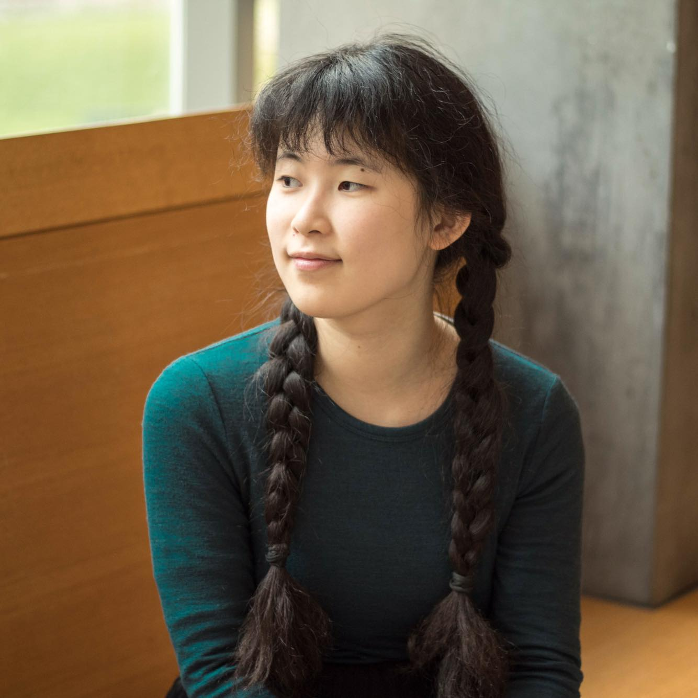

RACHEL MA
About Me Musically
|  |
Starting Fall 2023, I will be a doctoral student in EECS at MIT. I recently graduated from Brown University, double majoring in Computer Science and Music, both with honors.
I'm a pianist and composer.
(Middle+High School: University of Toronto Schools (UTS Class of 2019)).
Recent Update: Will be a doctoral student in EECS at MIT starting Fall 2023. |
Theory/Music Relevant Classes
At Brown University: Chamber Music Performance (coached by Consuelo Sherba) and Applied Music Program Keyboard (taught by Saleem Abboud Ashkar, Rosalind Chua). MUSC0550 Theory of Tonal Music, MUSC0560 Theory of Tonal Music II, MUSC 1100 Intro to Composition, MUSC 1700 Score Reading and Conducting, MUSC1060 Analysis & Performance of Music, MUSC 1120 Orchestration, MUSC 1500A Bach Seminar, MUSC 1500B Messiaen Seminar
RCM Exams/Courses completed pre 2014: Advanced Rudiments, History 1 (Overview), History 2 (Middle Ages to Classical), History 3 (19th Century to present), Harmony, Counterpoint, Analysis.
Piano/Performer Experiences
Piano Soloist
Achieved distinction for grade 10 piano in 2014. Received two piano performance diplomas from the Canadian Royal Conservatory of Music: Associate Diploma (ARCT) issued in 2016 and Licentiate Diploma (LRCM) issued in 2019.
Performed pieces such as Chopin's Ballade no. 1 in G minor, op. 23; Beethoven's Piano Sonata No. 23 in F minor, Op. 57 "Appassionata", Prokofiev's Piano Sonata No. 3 in A minor, Op. 28, Shostakovich's Piano Concerto No. 2 in F major, Op. 102
Piano Chamber Musician
At Brown University, was involved in a piano trio from 2019 to 2023.
Performed pieces such as Beethoven's Piano Trio No. 3 in C minor (Op. 1, No. 3), Beethoven's Piano Trio in D major, Op.70 No.1 "Ghost", and Mendelssohn's Piano Trio No. 1 in D minor.
At Brown University, was involved in duet performances.
Performed pieces such as Beethoven's Piano and Violin Sonata No. 9 in A major, Op. 47 "Kreutzer", Brahms's Violin Sonata No. 2 in A major, Op. 100.
Piano Accompanist
Served as piano accompanist at Brown University and at University of Toronto Schools (UTS). Accompanied for various singers, violinists, and ensembles.
Celesta part in Brown's Wind Symphony in a concert in 2019-2020.
Accompanied UTS's ensembles: Concert Choir, Chamber Choir, Chamber Strings, Senior Strings, Junior Strings, S5/S6 Orchestra. Also played piano in Junior Jazz Band.
Violinist
Learned violin as part of high school curriculum at University of Toronto Schools.
Played violin in ensemble score reading exercises in Brown for a Conducting class.
Played violin in UTS's ensembles: Senior Strings, Junior Strings
Composer Experiences
"Odyssey"
Composed by Rachel Ma in 2022-2023. Read by Brown University Orchestra
"Recolections"
Composed by Rachel Ma in 2018-2019. Original wind orchestra version read by the SPO Orchestra for the SPO project.
Second rearranged version performed by Bridget Peters (trumpet), Phoebe McElligott (oboe), Stone Hu (flute), Kev Wang (fLute/Piccolo), Tristan Vena (clarinet), Gabriel Beiner (cello), Kat Dou (bassoon), Andreas Ma (snare drum)
"Show Theme"
Composed by Rachel Ma in 2017-2018 for UTS Show Soundtrack, Part 1 Performed by: Rachel Ma (piano), Nils Emmenegger (Clarinet), Kevin Wang (Flute), Mr. Laidman (percussion)
Composed by Rachel Ma in 2017-2018, Part 2 Performed by: Rachel Ma (piano), Myron Moskalyk (violin), Adam Tam (viola), Donna Oh (cello)
"Silver Lining"
Composed by Rachel Ma in 2016-2017. Performed by: Rachel Ma (piano hands #1, 2), Aaron Dou (piano hands #3, 4)
"Spring Bloom"
Composed by Rachel Ma in 2015-2016, Performed by: Rachel Ma (piano), Billy Bao (violin)
"Even Bigger"
Composed by Rachel Ma in 2014-2015, Performed by: Rachel Ma (piano), Billy Bao (violin), Esther Yue (violin), Jamie Li (viola), Gabriel Beiner (cello), Adam Leung (double bass)
Awards After High School
MH. Mann Premium Award (May 2023, Brown Music Department)
Margery MacColl Award (2021, Brown Music department)